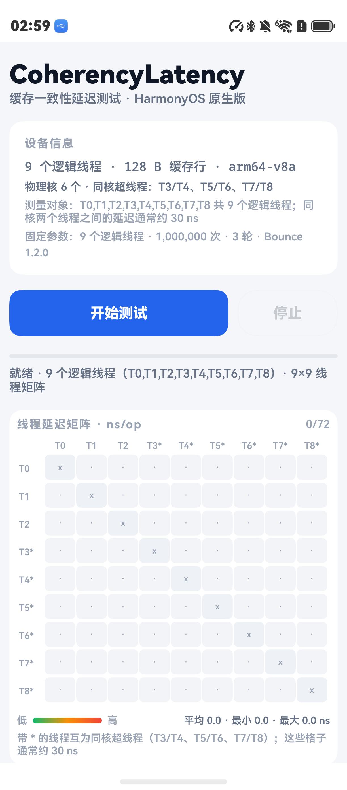
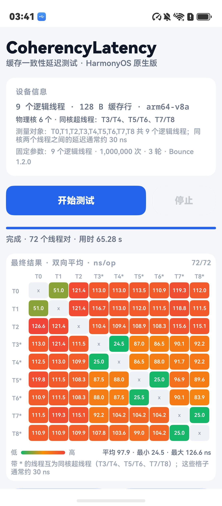

版本： 1.2.0 | 适用系统： HarmonyOS 5.0.0（API 12）及以上，arm64-v8a / x86_64 设备（手机 / 平板 / 2in1） | 形态： 图形界面应用（.hap）
CoherencyLatency 测量 CPU 逻辑线程之间的缓存一致性延迟（核间延迟），单位纳秒（ns）。
原理：两个线程分别绑定到两个指定的逻辑线程上，对同一缓存行里的原子变量做往返读写（Bounce 模式），每轮记录起止时间，取多轮最小值。一次配对运行已经包含 i→j 与 j→i 两个方向，结果除以 2 后同时填入矩阵的对称两格。
本包不包含已签名 HAP。先按同目录《自行签名说明》完成签名，再执行：
hdc install -r CoherencyLatency-HarmonyOS-1.2.0-signed.hap签名说明：本包只提供未签名 HAP，不能直接安装。请先按同目录《自行签名说明》用 DevEco Studio 自动签名，或用自己的证书 + Profile 签名；调试签名会绑定设备 UDID，换设备要重新生成 Profile。
安装后桌面出现「核间延迟」图标，点击即可。也可以用命令启动：
hdc shell aa start -a EntryAbility -b com.example.coherencylatency从上到下依次是：
已完成/总数 · T发送方↔T接收方 当前值 ns · 用时 x.x s。状态行只在每完成一个线程对时刷新一次，两次结果之间数字保持不动（与 Android 版一致），不会高频跳动。x；. 表示尚未测到，N/A 表示该线程对绑定失败；颜色从绿（低）到黄再到红（高），只在本矩阵内相对比较；底部显示平均 / 最小 / 最大。线程较多、一屏放不下时，矩阵卡片可以左右滑动。| 参数 | 值 | 说明 |
|---|---|---|
| 迭代次数 | 配置值 1,000,000；线程矩阵每轮 500 次 | 每轮内每个线程的原子操作次数；短轮次降低被调度器折叠或迁走的风险 |
| 采样轮数 | 每对每方向 800 轮，至少保留 64 轮有效样本 | 用多轮统计抵消偶发异常；样本不足自动重试，避免 1–2 个离谱轮次污染整格 |
| 模式 | Bounce | 两个线程互相把缓存行“打”给对方 |
| 单位 | ns/op | 每次原子操作的往返延迟 |
| 慢档重测 | 高于同核延迟的 5 倍（最低 80 ns，缺省 135 ns）时换反向窗口重测，最多 16 个窗口取最小 | 最高性能核存在整窗慢档，换窗口是可靠的逃逸方式 |
| 绑核重试 | 最高性能核 40 轮 / 普通跨核 8 轮 / 普通同核 20 轮；最高性能核交叉对再精确回退 24 次（间隔 20 ms） | 每次重试重新落核并采样；仍失败才显示 N/A |
iterations 次、总时间除以 2，所以得到的已经是双向平均延迟；把同一个双向平均值填入对称两格只是矩阵排版对称，不是只测单向再复制。如果该对绑定失败，两格同时显示 N/A。* 的线程互为同核 SMT 兄弟，这些格子通常 25–50 ns，明显低于跨核；本机示例 T3↔T4 约 26–30 ns、T7↔T8 约 25–50 ns、T5↔T6 约 35–80 ns（受频率与调度影响，波动较大）。测试完成后有两种方式：
应用会自动保存一份到应用沙箱：
/data/storage/el2/base/haps/entry/files/results/core_latencies_<时间戳>.csvCSV 为分号分隔的 N×N 矩阵，行列表头是逻辑线程号，N/A 表示绑定失败。下面是 9×9 的示例（其它线程数格式相同）：
;Thread 0;Thread 1;Thread 2;...;Thread 8
Thread 0;x;63.7;177.2;...;126.8
Thread 1;63.7;x;146.4;...;128.5
...
Thread 8;126.8;128.5;196.8;...;x应用不使用机型白名单，也不假设固定核数。每次启动按 sysfs 实测结果构建矩阵：
/sys/devices/system/cpu/online 得到在线逻辑线程；topology/thread_siblings_list，同一物理核的两个线程标为 SMT 兄弟；physical_package_id 分簇；读不到或不唯一时退回 cpu_capacity，再退回 cpuinfo_max_freq；HarmonyOS 的部分机型会由厂商调度器接管 CPU 亲和性：应用对某些核心调用 sched_setaffinity 时，函数可能返回成功，但内核实际把线程放到别的核。因此应用会：
跨版本/跨机型：工程以 HarmonyOS 5.0.0（API 12）为最低兼容版本，targetSdkVersion 26.0.0；系统版本更高时直接沿用同一套 API。HarmonyOS 4.x 及更早版本未做真机验证，32 位 ABI 未提供。矩阵尺寸、SMT 标签、簇和最高性能核都从 sysfs 读取，因此同系统版本的不同机型通常不需要改程序，但仍需实机验证绑核可用性；换到没有 SMT、单簇或四簇的设备同样自适应。
本机示例：9 个逻辑 CPU、6 个物理核（CPU 3/4、CPU 5/6、CPU 7/8 为超线程对），矩阵为 9×9。换一台设备，线程数、SMT 标签、簇、最高性能核与矩阵大小都会自动变化，不需要改程序。
Q：为什么矩阵大小不是固定的 9×9？ A：矩阵按设备实际在线逻辑线程数构建。9×9 只是本机示例；最多支持 20 线程（20×20）。线程多时矩阵可以左右滑动。
Q：只测 N×(N-1)/2 对，是不是测一半然后直接镜像？ A：不是。每一对的 Bounce 测试都让两个线程往返各跑 iterations 次，总时间除以 2，结果本身就是双向平均；上下三角填同一个值只是矩阵显示对称，不是用单向数据补另一格。原版源码里也注明可以跳过反向那一遍（“technically can skip the other way around”）。
Q：为什么矩阵里还有 N/A？ A：厂商调度器在负载下可能不遵守对某些线程的亲和性设置。程序会对该线程重试；实在绑不住时该对两格同时显示 N/A，不会用单侧结果补另一侧。1.2.0 最终验收 72/72、0 N/A、65.28 s。若系统负载或温度很高，个别格子仍可能 N/A，属平台限制，不是程序缺陷。
Q：数值每次都不一样？ A：正常。CPU 频率、温度、后台负载都会影响结果。固定性能模式、等设备温度稳定后再测，重复性最好。
Q：测试时手机发热？ A：满负载测试，短时发热正常。测完退出即可。
Q：能后台跑吗？ A：不能。应用切到后台会自动停止测试（避免系统调度干扰结果）。
Q：能装到别的鸿蒙设备吗？ A：发布包是未签名 HAP，需要用你自己的证书/Profile 签名。调试 Profile 只允许安装到登记过的设备；发布 Profile 才能公开分发。详见《自行签名说明》。
hdc uninstall com.example.coherencylatencysha256sum -c SHA256SUMS.txt| 主界面（就绪） | 测试结果（本机 9×9 示例） |
|---|---|
 |  |